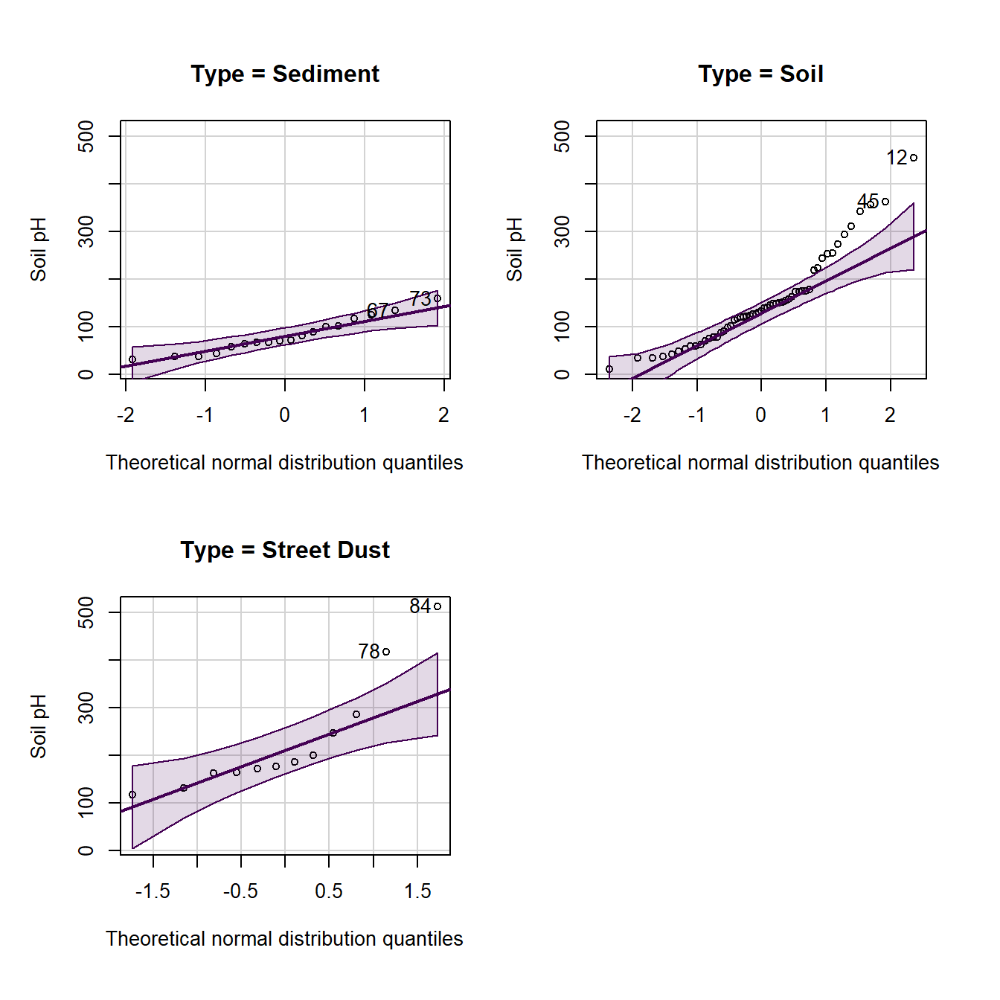
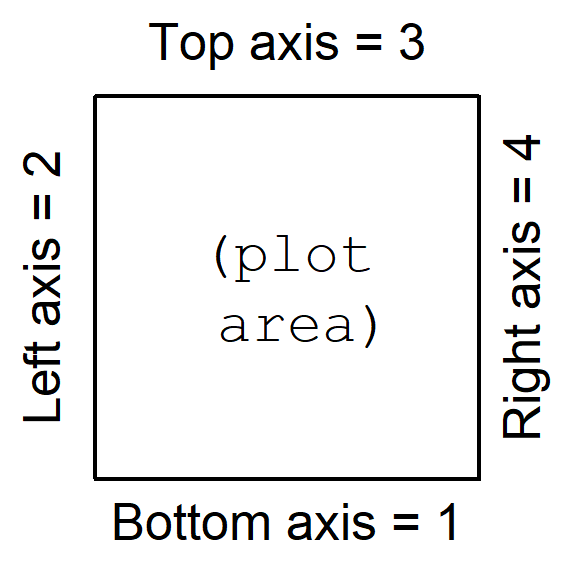

Material to support teaching in Environmental Science at The University of Western Australia
Material to support teaching in Environmental Science at The University of Western Australia
Units ENVT3361, ENVT4461, and ENVT5503
RStudio graphics and plotting
The base-R version
Andrew Rate
2025-12-05
Suggested Activities in this session
Using data previously provided (on LMS), produce presentation quality graphs of:
- Different probability distributions
- Cumulative distribution function, histogram, Q-Q plot
- Scatterplots
- Grouped by one or more factors
- Histogram, Q-Q plot, Boxplot
- A scatterplot matrix
require(car)thenscatterplotMatrix()- (grouped by one or more factors)
- Apply principles of graphical excellence
Useful tips for excellent graphs:
- Increase the default text and symbol sizes
- Remove unnecessary lines (smooth, spread)
- In R Studio, click on
Export/Copy to clipboard...
and select ◉ Metafile, then click [Copy plot]
(best pasting into Word, etc.) - Graph plus caption should be self-contained
- Transform axes if necessary
- Use appropriate proportions
More basic information on plots in R
This is a supplement to the other preliminary material on
R graphics. We have tried to avoid too much overlap
with other sessions. If you want
instructions on making the same plots using the ggplot2
R package, go to this
page.
Graphical Excellence
In Environmental Science at UWA we try to promote the principles of "graphical excellence". This means:
- Show the data – that is, the data are the important thing we want to communicate in graphics; "looking good" is only useful if it shows the data better!.
- Give your viewer the greatest number of ideas in the shortest time with the least ink in the smallest space (Tufte, 1983)1
- Graphical excellence is
- almost always multivariate...
- ...requires telling the truth about the data (no distortions, fair comparisons, etc.).
Some practical tips:
- Increase the default text and symbol sizes
- Remove unnecessary lines (e.g.
smooth,spreadincar::scatterplot()) - In RStudio, use the Export▾ button » Copy to clipboard » select ◉Metafile (best pasting into Word, etc.)
- Don't use screen shots, and avoid
.jpgfiles, as both can be blurry or grainy - Graph plus caption should be self-contained – we should only need to refer to these to fully understand the graph
- Don't include a title above the plot (in many
R plots, use the option
main="") – any information describing the plot should be in the caption - Transform axes if necessary (using arguments in R plotting functions)
- Use appropriate proportions (width/height) for the plot you are creating
- Change the default colour palette to a colourblind-friendly palette,
e.g. from the R packages
viridisorscico(see examples for viridis here and for scico here)
1 Tufte, E.R., 1983. The visual display of quantitative information. Graphics Press, Cheshire, Connecticut, USA.
Colours in R
The palette() function needs a vector of colour names or
codes, which we can then refer to by numbers in subsequent functions.
R has over 600 built-in colours, some with nifty names
like "burlywood",
"dodgerblue",
and "thistle"
– to see these, run the function colors() or run
demo("colors").
Colour codes are a character string with 6 or 8 digits or letters
after the # symbol, like "#A1B2C3". In the
6-digit version (the most common), the first 2 characters after
# are a hexadecimal number specifying the intensity of the
red component
of the colour, the next 2 specify green , and the next 2 blue . #rrggbb
The greatest 2-digit hexadecimal number is FF, equal to
the decimal number 255. Since we can include zero, this means there will
be 2563 = 16,777,216 unique colours in
R.
Optionally we can use an 8-character colour code, such as
"#A1B2C399", where the last 2 characters define the
alpha value, or colour transparency.
"#rrggbb00" would be fully transparent, and
"#rrggbbFF" would be fully opaque. We can also use the
colour name "transparent" in R which can
sometimes be useful.
Warning:
semi-transparent colours (i.e. alpha < 1; anything other
than "#rrggbb" or "#rrggbbFF") are not
supported by metafiles in R. To use semi-transparent colours, save as
.png or .tiff, or copy as a bitmap.
Getting started
Before we start we load some packages (which we need to have installed previously). We also need to load a dataset that we may have seen before (the Smith's Lake & Charles Veryard Reserves data from 20217 – we use it a lot for illustrating environmental statistics and plotting).
library(car) # scatterplot() and scatterplotMatrix() functions
library(viridis) # colourblind-friendly colour palettes
library(scico) # 'scientific' colour palettes
git <- "https://github.com/Ratey-AtUWA/Learn-R-web/raw/main/"
sv2017 <- read.csv(file=paste0(git,"sv2017_original.csv"), stringsAsFactors = TRUE)
sv2017$Group <- as.factor(sv2017$Group)We then make an xy-plot (Figure 1) using the
scatterplot() function from the car package,
first setting graphics output parameters with par() and
making a custom palette with palette().
require(car)
# adjust overall plot appearance using options within par()
# mar sets plot margins, mgp sets distance of axis details from axis
par(font.lab=2, mar=c(4,4,1,1), mgp=c(2.2,0.7,0.0))
# create custom palette with nice colours :)
palette(c("black",viridis::plasma(4)))
# draw scatterplot with customised options
# pch sets plot character (symbol); cex sets symbol/font sizes
scatterplot(Ca~pH | Type, data=sv2017, log="y", smooth=FALSE,
legend = list(coords="topleft"), col=c(4,2,1),
pch=c(16,0,17), cex=1.5, cex.lab=1.5, cex.axis=1.2)
Figure 1: Scatterplot of Ca vs. pH from the sv2017 dataset, made using
car::scatterplot() after setting graphics parameters and
colour palette.
Plot symbols
R has a set of 26 built-in plotting symbols which
can be specified using the pch = argument in many plotting
functions. For symbols 0-20 the colour is set using the argument
col =. For symbols 21-25 col = sets the border
colour, and the fill colour is set with bg =.
col="navy" and for pch 21-25
bg="gold".
histogram with density line
We have seen a modified boxplot similar to that in Figure 2 before. Adding a density line to a histogram can help us identify bimodal distributions, or see more easily if the distribution is symmetrical or not.
# plot histogram with custom scale and y-axis limits
with(sv2017, hist(log10(EC), freq=F, breaks=15, col="gray", ylim=c(0,2), main=NA))
# add density plot overlay onto histogram
lines(density(log10(sv2017$EC), na.rm=TRUE), col="blue")Figure 2: Histogram of EC from the sv2017 data with density line plot added.
Boxplot by groups
We also made a grouped box plot like the one in Figure 3 in a previous session.
# set up overall plot parameters with par()
par(mar=c(4,4,1,1), mgp=c(2.2,0.7,0),
font.lab=2, lend="square", ljoin="mitre")
# make an object containing a table of means
Cu_means<-tapply(log10(sv2017$Cu), sv2017$Type, mean, na.rm=T)
# plot the boxplot with nice axis titles etc.
boxplot(log10(sv2017$Cu) ~ sv2017$Type, id.method="y",
col=c("skyblue","tan","grey"), id.n=0,
xlab="Sample Type", cex=1.4, cex.lab=1.4, cex.axis=1.3,
ylab=expression(bold(paste(log[10],"(Cu, mg/kg)"))))
# plot the means as a symbol
points(Cu_means, col="blue", pch=3, cex=1.5, lwd=2)
# optionally add a horizontal line to represent some
# threshold or guideline value(s)
abline(h=log10(65), col="red", lty=2)
# add a legend (especially if a threshold line was added!)
# Note use of \n to add a line break
legend("bottomright",legend=c("Mean","ISQG-Low:\nCu 65 mg/kg"),
pch=c(3,3), pt.cex=c(1.5,0), pt.lwd=c(2,-1), cex=1.,
col=c("blue","red"),lty=c(-1,2),lwd=c(-1,2), bty="n",
seg.len=2.5, inset=0.03, x.intersp = 0.5)Figure 3: Boxplot of Cu by Type, showing means, in the sv2017 data.
Scatterplot of water sample points by group
First read the water data (from Smith's Lake, North Perth, sampled in 2018):
SL_water <- read.csv(file=paste0(git,"SL18.csv"), stringsAsFactors = TRUE)
SL_water$Group <- as.factor(SL_water$Group)We can then use scatterplot() from the car
package to plot the points. Important arguments in the
scatterplot() function in this example are:
regLine = FALSEto not plot regression lines for the pointssmooth = FALSEto not plot smoothed curves for the pointsasp = 1sets the plot aspect ratio to 1 so the geometry is not distorted (this is important for anything resembling maps!)legend = list(...)to set legend position, size, etc.pch = c(...)to select specific symbols for each group of points
We also define the colour palette to be used; viridis::
specifies the package to use without actually loading it, so we can use
the function viridis(n), which gives a palette of
n colourblind-friendly colours
(In
general we can run packageName::function() without
explicitly loading packages.)
# define the colour palette to choose plot colours from
palette(c("black", viridis::viridis(9)))
carPalette(palette())
# note the asp=1 option constrains the height/width ratio
scatterplot(Northing ~ Easting | Group,
regLine = FALSE,
smooth = FALSE,
boxplots = FALSE,
cex = 1.25,
cex.axis = 1.2,
cex.lab = 1.3,
data = SL_water,
asp = 1,
lwd = 2,
legend = list(coords="topright", cex=1.25),
pch = c(0,1,2,5,6,15,16,17,18,7,9,10),
xlab = "Easting UTM Zone 50 (m)",
ylab = "Northing UTM Zone 50 (m)",
main = "Smith's Lake Water Sample Locations 2017",
cex.main = 0.7
)
text(
c(391380, 391390),
c(6466498, 6466405),
labels = c("Inlet", "Outlet"),
pos = 2,
col = c(2, 5)
)
Figure 4: Plot of water sample locations in Smith's Lake in 2018 made
using car::scatterplot().
'base R' plot of water sample points by group
We can reproduce Figure 4 made using car::scatterplot()
in base-R graphics as well:
# set up overall plot parameters with par()
# font.lab=2 makes axis titles bold
# 'lend' sets line end style, 'ljoin' sets line join style
par(
mar=c(4,4,1,1),
mgp=c(2.2,0.7,0),
font.lab=2,
lend="square",
ljoin="mitre"
)
# define the colour palette to be used
# viridis:: specifies the package to use without actually loading it, so
# we can use viridis(n) which gives a palette of n colourblind-friendly colours
palette(c("black", viridis::viridis(8)))
# plot the points, separating by the factor 'Group'
# note the asp=1 option constrains the height/width ratio
plot(SL_water$Northing ~ SL_water$Easting,
cex = 1.3,
cex.axis = 1.2,
cex.lab = 1.3,
asp = 1,
lwd = 1,
pch = c(21:25,21:24)[SL_water$Group], # better plot symbols!
bg = c(1:9)[SL_water$Group], # fill colour for pch 21-25
xlab = "Easting UTM Zone 50 (m)",
ylab = "Northing UTM Zone 50 (m)",
main = "Smith's Lake Water Sample Locations 2017",
cex.main = 0.7
)
# add a grid (optional)
grid()
# draw the legend to identify groups by symbol/colour
# note similar usage of cex, pch, etc.
legend(
"topright",
title="Group",
legend=levels(SL_water$Group),
cex=1.2,
pch = c(21:25,21:24), # vector for pch= same as for plot
pt.bg = 1:9, # fill colour for pch 21-25
pt.cex=1.3,
pt.lwd=1,
box.col="grey",
box.lwd=2,
inset=0.02
)
# add some text at appropriate coordinates
# vector of x's, vector of y's, vector of text labels, etc.
text(
c(391380, 391390),
c(6466498, 6466405),
labels = c("Inlet", "Outlet"),
pos = 2,
col = c(6, 3)
)Figure 5: Plot of water sample locations in Smith's Lake in 2018 made using base-R graphics.
The code to make Figure 5 is somewhat more intricate than that for Figure 4, but base-R plotting can give us more control over plot appearance. (Note that we don't need to have each function argument on a separate line, as we have done in the previous code block.)
One aspect of this plot, which is probably an advantage, is the use
of symbols with different colour fill and outline
(pch = 21:25). This means we can make better use of the
lighter colours in gradational palettes such as those generated by the
viridis or scico packages.
"...when we look at the graphs of rising ocean temperatures, rising carbon dioxide in the atmosphere and so on, we know that they are climbing far more steeply than can be accounted for by the natural oscillation of the weather ... What people (must) do is to change their behavior and their attitudes ... If we do care about our grandchildren then we have to do something, and we have to demand that our governments do something."
— David Attenborough
Setting up graphics parameters before plotting
First we read some more data to illustrate some ideas:
1. Using xy-plots to look at the effect of changing
par() function arguments
We use the base-R function par() to
change graphics parameters like plot margins. After using
par() these stay changed until changed again by running
par() with different arguments.
For example let's plot an x-y plot using the default
settings in par():
Figure 6: Default plot of Ca vs. pH.
Now, try changing some graphics options using the par()
function and re-running the simple plot
par(mar=c(4,4,1,1), mgp=c(1.8,0.7,0), font.lab=2, cex=1.5, cex.axis=1.25,
cex.lab=1.5, tcl=0.2)
plot(sv18$Ca ~ sv18$pH, log="y")
Figure 7: Plot of Ca vs. pH with plot margins, symbol sizes, and font
size and style changed using par().
This time we adjust the settings in par() to plot
multiple plots on a page using the mfrow argument, which
needs a two-value vector c(rows,columns).
par(mfrow=c(2,2), mar=c(4,4,1,1), mgp=c(1.2,0.2,0),
font.lab=2, cex=1., cex.axis=.8, cex.lab=1.,
tcl=0.2)
with(sv18, plot(Ca ~ pH, log="y", pch=0))
with(sv18, plot(Mg ~ pH, log="y", pch=1, col = "red3"))
with(sv18, plot(Na ~ pH, log="y", pch=2, col = "purple"))
with(sv18, plot(Sr ~ pH, log="y", pch=3, col = "blue2"))
Figure 8: Plot of Ca, Mg, Na, and Sr vs. pH with multiple plots
specified using par() and different sub-plot appearances
set using arguments in plot().
2. Plots of variable distributions
Cumulative Distribution Function using plot.ecdf(). The
custom y-axis label explains the plot!
(note use of
\u to insert a Unicode character by its 4-digit code
[Unicode character 2264 is 'less than or equal to' (≤)] )
Figure 9: Cumulative distribution of pH in the sv18 dataset.
A better cumulative plot is the normal quantile or 'q-q' plot
specially transformed axes mean that a normally distributed variable
will plot as a straight line. qqPlot() from the
car package is best; the plot shows the theoretical line
and the 95% confidence range.
Figure 10: Normal quantile (QQ) plot of soil pH in the sv18 dataset. The values in the output block below are the row numbers for unusual observations, which also appear on the plot.
## [1] 59 58
We can group q-q–plots by a factor:
par(oma=c(1,1,1,1))
with(sv18, qqPlot(Na ~ Type,
xlab="Theoretical normal distribution quantiles",
ylab="Soil pH"))
Here's another customization of histograms – we've seen these in a previous Workshop. Adding a reference concentration shows what proportion of samples have concentrations exceeding this value (or not).
with(sv18, hist(log10(Zn), breaks=seq(0.4,3.2,0.2),
xlab="log10(Zn, mg/kg)", main=""))
# add a vertical line at a threshold value (e.g guideline)
abline(v=log10(300), lty=2, col="red")
text(log10(300),12, labels = "Zn guideline\n300 mg/kg",
pos=4, col="red")
Figure 11: Histogram of Zn in the sv18 data, showing a reference
concentration added using abline() and text().
Here's a similar customization of box plots – we've
also seen these in a previous Workshop (the only way to get
complex formatting in plot axis labels is to use
expression() – this code has an example for a
subscript in the y-axis label):
boxplot(log10(sv18$Zn) ~ sv18$Type,
xlab="Sample Type",
ylab=expression(bold(paste(log[10],"(Zn, mg/kg)"))), main="")
Figure 12: Boxplot of Zn by sample type in the sv18 data, with complex
formatting in the y-axis label using an R expression().
Let's plot it again with better font size to copy-paste into a report. We use a large text size so the plot can be reduced in overall size (e.g. to put plots side-by-side, or to suit 2-column document formats).
par(mar=c(4,4,1,1), mgp=c(2,0.6,0), font.lab=2)
boxplot(log10(sv18$Zn) ~ sv18$Type,
xlab="Sample Type",
ylab=expression(bold(paste(log[10],"(Zn, mg/kg)"))),
main="",
cex.axis=1.5, cex.lab=1.5,
col="moccasin")
# add a HORIZONTAL line at a threshold value (e.g guideline)
abline(h=log10(300), lty=2, col="red")
# label it using text()
text(1,log10(300), labels="Zn limit 300 mg/kg",
cex=1.25, col="red", pos=3)
Figure 13: Modified boxplot of Zn by sample type in the sv18 data, with
complex formatting in the y-axis label using an R
expression().
3. Variations on scatter plots
In this sequence of plots we show one way to informatively plot a concentration vs. sediment/soil depth, with depth displayed vertically, and increasing downwards, as we would expect in the real world.
par(mfrow = c(1,2))
plot(sv18$Fe ~ sv18$Depth_lower, pch="-")
plot(sv18$Fe ~ sv18$Depth_upper, pch="+")Figure 14: Plots of Fe vs. depth measurements in the sv18 data.
Ideally we would like to plot concentration against mean
depth, but we can't use a formula (i.e. anything in
R that uses ~) in another formula! ...
...so we change the syntax for the variables in plot() to
use comma instead of ~ to allow us to put a calculation in:

We could also do this by calculating a new variable, e.g.:
We would then use the newly-calculated sv18$Depth.mean
as the variable.
For this type of plot, we would prefer to plot depth on the [more intuitive] vertical axis
Figure 15: Plot of Fe vs. depth with x- and y-axis positions switched (so really it's depth vs. Fe, but we have our reasons).
This puts depth in the wrong direction, though, so we use
ylim = to reverse direction of y axis, by swapping
ylim=c(0,100) for ylim=c(100,0).
Figure 16: Plot of Fe vs. depth with x- and y-axis positions switched and the vertical axis (depth) scale reversed.
Now tidy up plot margins, axis labels, etc. – use
help() to understand the function arguments for
par() and plot()...
par(mar=c(4,4,1,1),
mgp=c(1.6,0.5,0),
font.lab=2)
#... and plot it again with nice axis labels
plot(sv18$Fe, ((sv18$Depth_upper+sv18$Depth_lower)/2), ylim=c(100,0),
xlab="Fe (mg/kg)", ylab="Mean depth (cm)")Figure 17: Plot of Fe vs. depth with x- and y-axis positions switched, y axis scale reversed, and tidy axis labels.
What if we want the horizontal axis 'on top'? We do this by omitting
axis plotting (i.e. xaxt="n") and axis label
(xlab="")...
... then plot the x-axis
manually, first adjusting plot margins so that there is more space at
the top of the plot and less at the bottom.
par(mar=c(1,4,4,1)) # won't change anything except margins
plot(sv18$Fe, ((sv18$Depth_upper+sv18$Depth_lower)/2),
xlab="", xaxt="n",
ylim=c(100,0),
ylab="Mean depth (cm)")
# two code lines for manual axis plus label
axis(3)
mtext(side=3, line=2.5, font=2, text="Fe (mg/kg)")Figure 18: Plot of Fe vs. depth with x- and y-axis positions switched, y axis scale reversed, tidy axis labels, and x-axis label and ticks at the top.
For more advanced options for plotting depth profiles in R, click this link.
|
Axis values in R In R the plot axes have a specific order. For example in the par()
function when setting margins, e.g.
mar=c(4,4,1,1), the margins are set with a four-value
vector. The values of this vector are always in the same order:
c(bottom, left, top, right), that is, clockwise starting
from the bottom axis = 1.
|

4. Scatterplot matrices
A scatterplot matrix can be a very useful data exploration tool (for the most effective visualization, you might need to change the default colours).
Scatterplot matrices are available using the
scatterplotMatrix() function (which can be shortened to
spm()) from the car package.
The most basic implementation is plotting without grouping by a
Factor variable. Note the different way in which the variables (a list
starting with ~ and separated by +) and data
frame (data=) are specified.
The smoothed trend through the points can be included by changing the
smooth= argument to smooth=TRUE.
A very useful feature of scatter plot matrices is the display of each variable's distribution along the diagonal of the plot matrix. In the example in Figure 19, we can see that all variables have a positively skewed distribution (which might be made more symmetrical by log-transformation).
Figure 19: Scatter plot matrix of Al, Ca, Fe, and Na concentrations in sediment + soil + street dust samples from Smith's Lake and Charles Veryard Reserves, North Perth, WA, sampled in 2018.
To distinguish the points according to the categories in a Factor
variable, the Factor is included after the list of plotted variables
using the | operator. We also see the distributions
separated by group along the diagonal.
Separating the plots by a factor allows us to see if trends are
consistent between groups, or if groups behave very differently. [If you
don't want to bother with the scico package, use
col = c("#EDB256", "#AC4A44", "#191900") for the same
result.]
scatterplotMatrix(~Al + Ca + Fe + Na | Type, data=sv18, smooth=FALSE,
col=scico::scico(3,palette = "lajolla", begin=0.3),
pch = c(0,1,3), cex=1.4)Figure 20: Scatter plot matrix of Al, Ca, Fe, and Na concentrations in samples from Smith's Lake and Charles Veryard Reserves, North Perth, WA, sampled in 2018 and grouped by sample type (sediment, soil, or street dust).
Often we can get a better idea of the trends and differences between
variables by transforming variables (log10-transformation
usually is OK). [If you don't want to bother with the scico
package, use col = c("#001959","#426F51","#E09651") for the
same result.]
scatterplotMatrix(~log10(Al) + log10(Ca) + log10(Fe) + log10(Na) | Type,
data=sv18,
smooth=FALSE,
col=scico::scico(3,palette = "batlow", end=0.7),
pch = c(15,1,3), cex=1.4)Figure 21: Scatter plot matrix of log-transformed Al, Ca, Fe, and Na concentrations in samples from Smith's Lake and Charles Veryard Reserves, North Perth, WA, sampled in 2018 and grouped by sample type (sediment, soil, or street dust).
5. Simple maps
Maps are [mostly] just scatterplots with a map background – we will spend a separate session on maps in R later.

References and R Packages
Fox J (2022). RcmdrMisc: R Commander Miscellaneous Functions. R package version 2.7-2, https://CRAN.R-project.org/package=RcmdrMisc.
Fox J, Weisberg S (2019). An {R} Companion to Applied Regression,
Third Edition. Thousand Oaks CA: Sage. https://socialsciences.mcmaster.ca/jfox/Books/Companion/
(car package).
Garnier S, Ross N, Rudis R, Camargo AP, Sciaini M, Scherer C (2021).
Rvision - Colorblind-Friendly Color Maps for R. R package
version 0.6.2. https://sjmgarnier.github.io/viridis/
(viridis package).
Pedersen T, Crameri F (2023). scico: Colour Palettes Based on the Scientific Colour-Maps. R package version 1.4.0, https://CRAN.R-project.org/package=scico.
# first load and run code to make UWAcolgrad() function
# for help download the UWAcolgrad.R file itself and look inside!
source("https://github.com/Ratey-AtUWA/Learn-R/raw/main/UWAcolgrad.R")
np <- 32
par(mar=rep(0.5,4), xpd=TRUE)
plot(0:1, 0:1, ann=F, axes = F, type="n", ylim=c(-0.1,1))
points(seq(0,1,l=np),rep(1,np),pch=22,bg=viridis(np),cex=4)
text(0.5,0.98,labels=paste0("viridis::viridis(",np,")"),pos=1, cex=1.4, family="mono")
points(seq(0,1,l=np),rep(0.85,np),pch=22,bg=plasma(np),cex=4)
text(0.5,0.83,labels=paste0("viridis::plasma(",np,")"),pos=1, cex=1.4, family="mono")
points(seq(0,1,l=np),rep(0.7,np),pch=22,bg=cividis(np),cex=4)
text(0.5,0.68,labels=paste0("viridis::cividis(",np,")"),pos=1, cex=1.4, family="mono")
points(seq(0,1,l=np),rep(0.55,np),pch=22,bg=scico(np, palette = "hawaii"),cex=4)
text(0.5,0.53,labels=paste0("scico(",np,", palette='hawaii')"),pos=1, cex=1.4, family="mono")
points(seq(0,1,l=np),rep(0.4,np),pch=22,bg=scico(np, palette = "lajolla"),cex=4)
text(0.5,0.38,labels=paste0("scico(",np,", palette='lajolla')"),pos=1, cex=1.4, family="mono")
points(seq(0,1,l=np),rep(0.25,np),pch=22,bg=scico(np, palette = "batlow"),cex=4)
text(0.5,0.23,labels=paste0("scico(",np,", palette='batlow')"),pos=1, cex=1.4, family="mono")
points(seq(0,1,l=np),rep(0.1,np),pch=22,bg=UWAcolgrad(np),cex=4)
text(0.5,0.08,labels=paste0("UWAcolgrad(",np,")"),pos=1, cex=1.4, family="mono")
points(seq(0,1,l=np),rep(-0.05,np),pch=22,bg=UWAcolgrad(np, saturated = TRUE),cex=4)
text(0.5,-0.07,labels=paste0("UWAcolgrad(",np,", saturated=TRUE)"),pos=1, cex=1.4, family="mono")
CC-BY-SA • All content by Ratey-AtUWA. My employer does not necessarily know about or endorse the content of this website.
Created with rmarkdown in RStudio. Currently using the free yeti theme from Bootswatch.